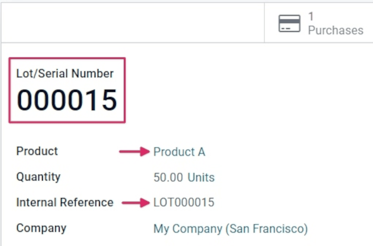
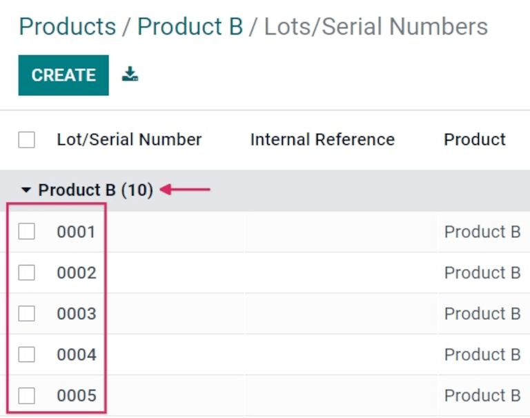

Diferencia entre lotes y números de serie¶
Los lotes y números de serie son dos formas diferentes de identificar y rastrear los productos en Odoo. Aunque hay similitudes entre estos dos métodos de rastreos, también hay diferencias muy importantes que afectan las recepciones, entregas y reportes de inventario.
Un lote indica un grupo específico de artículos que se recibió, se almacenó o se envió de un almacén, pero también puede indicar un grupo de productos que se fabricaron dentro de la empresa.
Un número de serie es un identificador único que se le asigna a los productos o artículos de manera incremental (o secuencial) para distinguirlos de otros productos y artículos.
Activar lotes y números de serie¶
Debe activar la función Lotes y números de serie para poder rastrear productos con lotes y números de serie.
Para hacerlo, vaya a , baje a la sección Trazabilidad y haga clic en la casilla junto a Número de serie y lote. Después, haga clic en Guardar para guardar los cambios.

Cuándo usar lotes¶
Los lotes son muy útiles para productos que fabrica o recibe en grandes cantidades (como ropa y comida), además de que ayuda a saber de qué grupo salió un producto. Esto le ayudará cuando tenga que retirar un producto del mercado o al gestionar fechas de caducidad.
Example
Los fabricantes asignan un número de lote a grupos de producto que tienen propiedades en común, por lo que es posible que muchos bienes compartan el mismo número de lote. Esto ayuda a identificar un número de productos dentro de un mismo grupo y permite dar seguimiento a estos productos durante todo su ciclo de vida.
Cuándo usar números de serie¶
Asignamos números de serie a productos individuales para asegurarnos de que es posible identificar el historial de cada artículo conforme se mueve a lo largo de la cadena de suministro. Esto puede ser útil para fabricadores que proveen servicios posventa a productos que ya vendieron y entregaron.
Example
Los números de serie pueden contener muchos tipos de caracteres diferentes: números, letras, símbolos tipográficos o una mezcla de los tres.
Trazabilidad¶
Los fabricantes y las empresas pueden consultar los reportes de trazabilidad para ver todo el ciclo de vida de un producto. Estos reportes incluyen información esencial, por ejemplo, de dónde procede (y cuándo llegó), dónde se almacenó y a quién se envió.
Para ver la trazabilidad completa de un producto o agruparlos por números de serie, vaya a la aplicación . De esta manera podrá ver el tablero con los :guilabel:números de lote y de serie`.
Aquí se enlistarán en automático todos los productos a los que se les haya asignado un lote o número de serie y se podrá expandir para mostrar los lotes o números de serie que esos productos tienen asignados.
Para agrupar por lotes o números de serie, primero quite todos los filtros automáticos de la barra de búsqueda en la esquina superior derecha. Después, haga clic en Agrupar por y seleccione Agregar grupo personalizado, lo que le mostrará un menú desplegable desde donde podrá seleccionar un Lote/Número de serie. Finalmente, haga clic en Aplicar.
Al hacer esto se mostrarán todos los lotes o números de serie y de lote existentes y puede expandir la vista para mostrar todas las cantidades de productos que tienen ese número asignado. Para números de serie únicos que no se van a volver a usar, debería haber solo un producto por número de serie.
Truco
Para más información sobre números de lote (o de serie) individuales, haga clic en la línea de artículo para el lote o número de serie para mostrar el formulario de ese número de lote en específico. Cuando esté en el formulario haga clic en los botones inteligentes Ubicación y Trazabilidad para ver todas las existencias a la mano que usan ese número de serie y todas las operaciones que se hacen con es número de serie.